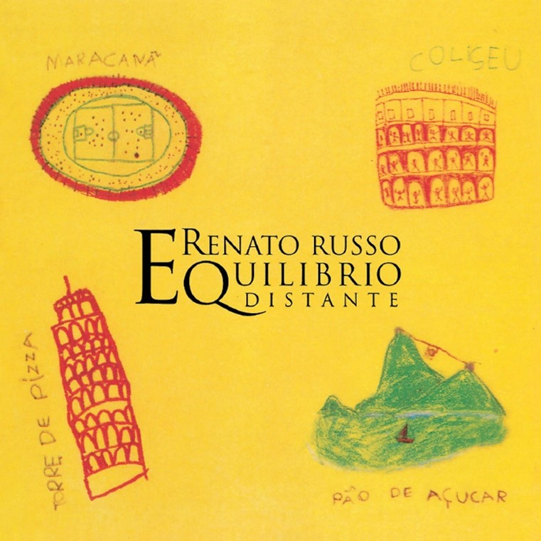

Antes da Legião
A origem da legião urbana se dá bem antes da banda em si, com uma doença e uma turma de uma faculdade. Renato Russo desde pequeno sempre teve muita influência de músicas de rock, como Elvis Presley, e sonhava em ser um astro. Com 15 anos, Renato Russo descobriu que possuía epifisiólise, uma doença rara nos ossos, que o impossibilitou de se mover por 2 anos. Neste período, ele se dedicou quase que integralmente à leitura de livros, a ouvir música, e aprender a tocar violão.
Após estar curado, começou a fazer parte da turma da colina, um grupo de amigos que estudavam na UnB (universidade de Brasília), e que ficaram sabendo de um alvoroço que estava ocorrendo na Inglaterra, antes que fosse popularizado para o resto do mundo. Este alvoroço era o movimento punk, o qual decidiram fazer parte, tornando-se assim, o primeiro grupo punk do Brasil.
Muitos membros da turma da colina, decidiram que apenas ouvir não era o bastante, e decidiram criar suas próprias bandas. Desta maneira, surgindo grupos icônicos como Os Paralamas do Sucesso, Plebe Rude, e o Aborto Elétrico.
O Aborto Elétrico, era uma banda composta por Renato Russo, Fê Lemos, Flávio Lemos e André Pretorius, o qual foi criado músicas icônicas que se tornaram hinos, não apenas com o nome da banda, mas além disso, com os espólios do que ela já foi. Desta banda surgiram músicas como Fátima, Marcianos Invadem a Terra, Química, Tédio com um T, Veraneio Vascaína, Ainda é Cedo, Dado Viciado, Geração Coca-Cola, Música Urbana, Soldados, e Que País é Este?
Infelizmente (ou felizmente) a banda não foi pra frente, devido à desavenças de Renato Russo com o resto da banda, além do fato de André Pretorius ter de se mudar, para servir à guerra que acontecia em seu país.
As músicas dessa banda foram divididas entre Renato Russo e Fê Lemos, com o Flávio Lemos.
Por conta do fim desta banda, Renato Russo decidiu tocar sozinho, enquanto Fê Lemos e Flávio Lemos decidiram chamar um amigo que eles tinham em comum na Turma da Colina para cantar, o Dinho Ouro Preto, e assim surgiu o Capital Inicial, com músicas regravadas da Aborto Elétrico. Seu primeiro sucesso foi a Música Urbana, e após, durante seu acústico MTV, gravaram músicas da Aborto Elétrico, como Fátima e Veraneio Vascaína.
Já Renato Russo, em sua carreira solo, criou músicas sob o pseudônimo de O Trovador Solitário, que viriam a ser sucessos bem como as anteriores. Alguma de suas músicas escritas nesta época são Eduardo e Mônica, Eu Sei, Faroeste Caboclo, e Boomerang Blues.
Após sentir que necessitava novamente de fazer músicas como antigamente, com uma banda, Renato Russo decide criar um novo grupo musical, contando com a presença de Marcelo Bonfá, que posteriormente convidariam Dado Villa-Lobos e Renato Rocha. Referenciando à uma frase do imperador Júlio Cesar, “Romana Legio Omnia Vincit”, Renato Russo, acreditando que o grupo deveria ser uma legião, criou a frase “Urbana Legio Omnia Vincit”, que significa “Legião Urbana a Tudo Vence”, frase o qual deu nome à banda fundada por eles, e que estava sempre presente em seus discos lançados. Desta maneira, a Legião Urbana Nasceu.
O post original pode ser acessado clicando aqui
Discografia
Legião Urbana (1985)
Legião Urbana, lançado em 2 de janeiro de 1985, possui um forte engajamento político-social, com letras que fazem críticas contundentes a diversos aspectos da sociedade brasileira. Paralelo a isso, possui algumas canções de amor que foram marcantes na história da música brasileira, como "Será", "Ainda É Cedo" e "Por Enquanto" - esta última que é considerada como "a melhor faixa de encerramento de um disco", segundo Arthur Dapieve, e posteriormente sendo regravada pela Cássia Eller, em seu acústico, o qual foi um enorme sucesso. "Geração Coca-Cola" é outra canção famosa deste álbum, pois assumia a voz daqueles que tinham crescido sob o regime militar, chamando-os de “Geração Coca-Cola”. Todas as quatro canções já citadas foram, juntamente a "Soldados", promovidas como singles, sendo muitas delas, regravações diretas das músicas da Aborto Elétrico, o qual pode ser visto ao longo de sua discografia.
A Legião Urbana começou a ganhar notoriedade seis meses após o lançamento do álbum, acelerando o andamento da música jovem brasileira. De toda a geração emergida no "boom" do rock nacional naquela década, a Legião Urbana foi particularmente a mais aclamada por público e crítica. Apesar das letras consideradas sérias, por outro lado, o discurso não caía para a facilidade do tom panfletário.
O post original pode ser acessado clicando aqui
Dois (1986)
O segundo álbum do grupo, Dois, foi lançado em Julho de 1986. Um estilo mais próximo do folk com letras mais líricas aflorou mais. Se o primeiro trabalho tinha toda uma urgência pós-punk, Dois era um contraponto; a visão complementar de um trovador que já não era mais solitário. A intenção era que o disco fosse duplo sob o nome de Mitologia E Intuição, mas o projeto foi negado pela gravadora, obrigando que o disco fosse simples. "Daniel Na Cova Dos Leões" abre o disco e no início da gravação, ouve-se uma introdução de um rádio mal-sintonizado tocando um trecho de "Será" e alguns trechos do hino da Internacional Socialista. Este álbum é o segundo mais vendido da banda, com mais de 1,8 milhão de cópias. "Tempo Perdido", seu primeiro single, fez um grande sucesso e se tornou um dos clássicos da Legião. "Eduardo e Mônica", "Índios" e "Quase Sem Querer" também foram promovidos como singles

O post original pode ser acessado clicando aqui
Que País É Este? (1978/1987)
O terceiro disco, Que País É Este? (1978/1987) foi lançado em dezembro de 1987. O sucesso de Dois fez com que a gravadora pressionasse muito a banda para o lançamento de um novo álbum, sem que houvesse repertório novo para isso. Das nove faixas de Que País É Este, apenas duas foram compostas depois do álbum "Dois" - estas, justamente as duas últimas: Angra dos Reis (em menção à construção de uma usina nuclear na cidade fluminense de mesmo nome) e Mais do Mesmo.
A canção Que País É Este, que dá nome ao álbum, foi escrita em 1978, por Renato Russo, em seu projeto com o Aborto Elétrico. Faroeste Caboclo, por sua vez, foi composta em 1979, mas nunca foi apresentada para o Aborto Elétrico, sendo presente em suas gravações como O Trovador Solitário. Esta, com mais de nove minutos de duração, possui 168 versos sem refrão e conta a história do nordestino João de Santo Cristo.
O post original pode ser acessado clicando aqui
As Quatro Estações (1989)
O álbum As Quatro Estações, do ano de 1989, levou um ano para ser lançado (o preparo começou em agosto de 1988 e o resultado foi publicado em 30 de outubro de 1989).
Por conta de toda a meticulosidade dos arranjos e letras, construídos ao decorrer deste tempo, o álbum é considerado por fãs o melhor e mais inspirado trabalho do grupo, e inclusive pelos próprios Dado Villa-Lobos e Renato Russo (que, segundo sua entrevista para a MTV em maio de 1994, passou a considerar o álbum seguinte, "V", o melhor do Legião até então). De todas as 11 canções do disco, apenas "1965 (Duas Tribos)" e "Maurício" não foram promovidas como singles. É o álbum mais vendido da Legião, com mais de 2,6 milhões de cópias.
O baixista Renato Rocha tocou com os demais integrantes nos três primeiros álbuns de estúdio do grupo e chegou a gravar algumas linhas de baixo deste álbum. Porém, foi expulso do grupo em fevereiro de 1989 por falta de compromisso durante as gravações do álbum.
As linhas de baixo originalmente gravadas por Rocha foram descartadas, e novas linhas foram criadas e gravadas tanto por Renato quanto por Dado. A canção "Feedback Song For A Dying Friend" foi composta em homenagem a Cazuza, que, antes de Renato descobrir ser portador da doença, já tinha anunciado ser soropositivo. Uma das canções mais tocadas, "Pais E Filhos", fala sobre o suicídio de uma menina jovem.
O post original pode ser acessado clicando aqui
V (1991)
Lançado em novembro de 1991, V é considerado o disco mais melancólico da banda. Renato estava em um momento complicado de sua vida, por conta da descoberta de que era soropositivo um ano e meio antes, problemas no relacionamento com seu namorado, e seu problema com o alcoolismo. Também houve muita influência do então Governo Collor, que teve muito destaque com o bloqueio da poupança de todos os brasileiros.
O álbum apresenta um estilo bem atípico do grupo. "Metal Contra As Nuvens" - a canção mais longa do grupo, com total de 11 minutos e 24 segundos de duração - e "O Teatro Dos Vampiros" foram as canções mais politizadas do disco. "A Montanha Mágica" também se destacou por se tratar da dependência química de Renato. Somente "O Teatro Dos Vampiros", "Vento No Litoral" e "O Mundo Anda Tão Complicado" foram promovidas como singles. O disco teve vendagens muito fracas se comparado principalmente ao disco anterior, não chegando nem a 500 mil cópias vendidas.
O post original pode ser acessado clicando aqui
O Descobrimento Do Brasil (1993)
O álbum O Descobrimento do Brasil (1993) foi lançado na época em que Renato Russo tinha iniciado o tratamento para livrar-se da dependência química e mostrava-se otimista quanto ao seu sucesso.
O álbum é dedicado ao músico Tavinho Fialho, baixista que acompanhou a banda na turnê do álbum anterior e que morreu em um acidente. Desta forma, Descobrimento é um álbum com fortes notas de esperança, mas permeado por tristeza e saudosismo. Ainda assim, é considerado por muitos o álbum mais "alegre" e delicado da Legião Urbana.
O art rock passa a ser muito experimentado no disco, em comunhão com o rock alternativo. "Perfeição" - única canção de crítica político-social do disco, com fortes traços de pessimismo -, "Giz" - a canção pela qual os integrantes do grupo mais se sentem felizes de terem feito, com diversas referências à infância - e "Vinte e Nove" - referência ao ciclo de 29 anos de Saturno como um recomeço para Renato - foram as canções de maior sucesso.
O post original pode ser acessado clicando aqui
A Tempestade (1996), Morte de Renato Russo e fim do grupo musical
A última apresentação da Legião Urbana aconteceu em 14 de janeiro de 1995, na casa de apresentações Reggae Night, em Santos, no litoral do estado de São Paulo. No mesmo ano, todos os discos de estúdio da banda até 1993 foram remasterizados no Abbey Road Studios, em Londres, conhecido mundialmente pelas suas gravações para o grupo musical The Beatles; e lançados em uma lata, intitulada "Por Enquanto (1984 - 1995)". A lata também incluía um pequeno livro, com um texto escrito pelo antropólogo Hermano Vianna, irmão do músico Herbert Vianna.
A Tempestade ou O Livro dos Dias, lançado em 20 de setembro de 1996, foi o último álbum da banda publicado com Renato Russo em vida. O mesmo foi marcado por canções muito introspectivas e depressivas, alternando entre as sonoridades pesadas de "Natália" e "Dezesseis", o lirismo de "L'Avventura" e "O Livro Dos Dias", o experimentalismo de "Música Ambiente", ao sofrimento de "Aloha" e "Esperando Por Mim" e à leveza de "Soul Parsifal" e "1º De Julho" (canção composta especialmente para a intérprete Cássia Eller, que a lançou em primeira mão em 1994). As letras, em geral, abordam temas como solidão, passado, amor, depressão, soropositividade, intolerância e injustiça, dito como um disco "melodramático" e de alma triste. "A Via Láctea" e "Dezesseis" foram seus principais singles.
Algumas canções do disco sugerem uma despedida antecipada, como diz o trecho "e quando eu for embora, não, não chore por mim", da canção "Música Ambiente". As fotos do encarte foram tiradas próximas à época do lançamento, exceto a de Renato, que foi aproveitada da sessão de fotos do seu álbum solo Equilíbrio Distante (1995), já que o cantor, bastante debilitado, se recusou a ser fotografado para o disco. O álbum A Tempestade foi lançado inicialmente na época com capa de papel e anos depois relançado com capa de plástico. A foto de Dado Villa-Lobos é diferente entre estas duas versões. Com exceção de "A Via Láctea", as demais faixas do álbum possuem apenas a voz-guia de Renato, que não pôde gravar as vozes definitivas. As vozes-guia foram gravadas no início das gravações do álbum, visto que Renato estava perdendo sua capacidade vocal. Também não foram incluídas as frases "Urbana Legio Omnia Vincit" e "Ouça no Volume Máximo", presentes nos discos do grupo. Em seu lugar, uma frase do escritor modernista brasileiro Oswald de Andrade: "O Brasil é uma República Federativa cheia de árvores e gente dizendo adeus". O fim oficial da banda foi anunciado em 22 de outubro de 1996, onze dias após a morte de Renato Russo. Ele morreu 21 dias após o lançamento de A Tempestade, no dia 11 de outubro de 1996. Em 11 dias depois, em 22 de outubro, Dado, Marcelo e o diretor artístico da EMI Music, João Augusto, anunciaram o fim das atividades do grupo que, por contrato, ainda devia três títulos à gravadora. Dado e Marcelo seguiram suas carreiras e lançaram discos solo nos anos seguintes.
Por conta de um processo de recuperação judicial do grupo iniciado em 1985 (pelo qual um oportunista registrou a marca do grupo antes de seus integrantes), quando o processo foi concluído, em 1991, o poder da marca Legião Urbana teria que ser centralizado em apenas um integrante, cujo escolhido foi Renato Russo. Um mês depois da morte dele, Dado Villa-Lobos e Marcelo Bonfá receberam uma ligação movida pelos pais de Renato, através da qual foi anunciado que os dois perderam o direito de dizerem publicamente que participaram da Legião Urbana. Este direito foi recuperado permanentemente em 27 de março de 2015, dia em que Renato faria 55 anos se estivesse vivo.
O post original pode ser acessado clicando aqui
Álbuns Solos de Renato Russo
The Stonewall Celebration Concert (1994)
The Stonewall Celebration Concert é o primeiro disco solo de Renato Russo, interpretado totalmente em inglês. Foi um dos primeiros álbuns totalmente gravados em computador no mercado brasileiro. Atingiu rapidamente a marca de 250 mil cópias. O disco é uma homenagem aos vinte cinco anos da Rebelião de Stonewall em Nova Iorque e parte dos royalties foi doada à campanha Ação da Cidadania contra a Fome, a Miséria e pela Vida, criada por Herbert de Souza, que morreu em 1997, vítima da AIDS.
A capa do disco homenageia Rock 'n' Roll, de John Lennon, e mostra Renato na porta do prédio onde morava na Rua Nascimento Silva. O número do edifício foi removido durante o tratamento da imagem para preservar a privacidade do músico. O final do encarte traz informações sobre entidades sociais de proteção às crianças e mulheres, à natureza e aos homossexuais e portadores do HIV.
O post original pode ser acessado clicando aqui
Equilíbrio Distante (1995)
Equilíbrio Distante é o segundo álbum solo de Renato Russo, lançado em dezembro de 1995. Consiste em regravações de canções em italiano, lançadas originalmente por cantores do país europeu. O álbum foi preparado ao longo de nove meses (sem contar pré-produção, mixagem e masterização), num período conturbado para Renato, que convivia com a depressão àquela altura de sua vida. Atingiu a marca de 200 mil cópias vendidas pouco após seu lançamento. Em uma breve crítica, a Folha de S. Paulo afirmou que o disco "não consegue repetir o lirismo delicado de The Stonewall Celebration Concert" e o define como "brega", dando como possíveis motivos "a língua, os arranjos melosos e a escolha do repertório".

O post original pode ser acessado clicando aqui